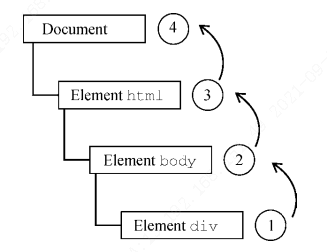
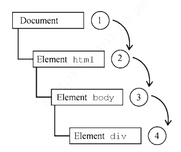
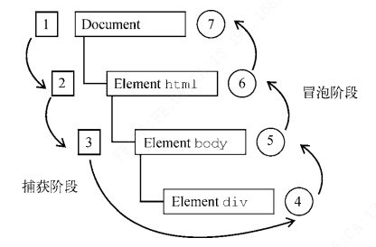

事件
事件编程是一种观察者模式，可以很好的解耦页面的表现和页面的行为。
事件流
事件冒泡 - IE 浏览器：从子节点到祖先节点
事件捕获 - Netscape 浏览器：从祖先节点到子节点
DOM 事件流 - DOM2 Event 规范 3 个阶段：事件捕获 -> 到达目标 -> 事件冒泡
事件冒泡：

事件捕获：

DOM 事件流：

事件处理程序
HTML 事件处理程序
1 | <input type="button" value="Click Me" onclick="console.log('Clicked')"/> |
也可以调用函数：
1 | <script> |
用这种方式 HTML 和 JavaScript 强耦合，所以一般不用。
DOM0 事件处理程序
1 | const btn = document.getElementById("myBtn"); |
注销：
1 | btn.onclick = null; |
这种方式添加的事件处理程序是注册在事件流冒泡阶段
DOM2 事件处理程序
1 | addEventListener(); |
这两个方法暴露在所有 DOM 节点上，它们接受 3 个参数：
- 事件名
- 事件处理函数
- 布尔值，true 表示在捕获阶段调用事件处理函数，false（默认值）表示在冒泡阶段调用事件处理函数。（面试被问到过）
相比于 DOM0 事件处理程序，这种方式可以添加多个事件处理程序：
1 | let btn = document.getElementById("myBtn"); |
执行的顺序是按绑定的顺序来的。
常见问题
- 解绑必须针对同一个函数，不能对匿名函数解绑
- 解绑第三个参数的 capture 必须相同，否则也会解绑失败
1 | element.addEventListener("mousedown", handleMouseDown, true); |
第一个调用失败是因为 useCapture 没有匹配。第二个调用成功，是因为 useCapture 匹配相同。
IE 事件处理程序
IE 实现了与 DOM 类似的方法，即 attachEvent()和 detachEvent()。这两个方法接收两个同样 的参数:事件处理程序的名字和事件处理函数。因为 IE8 及更早版本只支持事件冒泡，所以使用 attachEvent()添加的事件处理程序会添加到冒泡阶段。
1 | var btn = document.getElementById("myBtn"); |
执行顺序和绑定顺序相反
跨浏览器事件处理程序
1 | var EventUtil = { |
就是兼容这三种事件绑定方式而已。
事件对象
DOM 事件对象
1 | let btn = document.getElementById("myBtn"); |
不管以 DOM0 还是 DOM2 的方式，绑定事件处理程序，都会传入 event，事件对象。
this, currentTarget, target 的区别
this 是调用函数的对象，currentTarget 是事件函数注册的目标，而 target 是事件的实际目标。如果事件处理程序直接添加在了意图的目标，则 this、currentTarget 和 target 的值是一样的。下面的例子展示了这两个属性都等于 this 的情形：
1 | let btn = document.getElementById("myBtn"); |
上面的代码检测了 currentTarget 和 target 的值是否等于 this。因为 click 事件的目标是按钮，所以这 3 个值是相等的。如果这个事件处理程序是添加到按钮的父节点（如 document.body）上，那么它们的值就不一样了。比如下面的例子在 document.body 上添加了单击处理程序：
1 | document.body.onclick = function(event) { |
这种情况下点击按钮，this 和 currentTarget 都等于 document.body，这是因为它是注册事件处理程序的元素。而 target 属性等于按钮本身，这是因为那才是 click 事件真正的目标。由于按钮本身并没有注册事件处理程序，因此 click 事件冒泡到 document.body，从而触发了在它上面注册的处理程序。
preventDefault 和 stopPropagation
preventDefault()方法用于阻止特定事件的默认动作。比如，链接的默认行为就是在被单击时导航到 href 属性指定的 URL。如果想阻止这个导航行为，可以在 onclick 事件处理程序中取消，如下面的例子所示：
1 | let link = document.getElementById("myLink"); |
stopPropagation()方法用于立即阻止事件流在 DOM 结构中传播，取消后续的事件捕获或冒泡。例如，直接添加到按钮的事件处理程序中调用 stopPropagation()，可以阻止 document.body 上注册的事件处理程序执行。比如：
1 | let btn = document.getElementById("myBtn"); |
eventPhase
eventPhase 的取值及含义
| 值 | 常量 | 阶段 | 描述 |
|---|---|---|---|
| 0 | Event.NONE | 无阶段 | 事件未处于任何处理阶段（如事件未传播或已结束） |
| 1 | Event.CAPTURING_PHASE | 捕获阶段 | 事件从根节点（如 document）向下传播至目标元素 |
| 2 | Event.AT_TARGET | 目标阶段 | 事件已到达目标元素（event.target）并正在处理 |
| 3 | Event.BUBBLING_PHASE | 冒泡阶段 | 事件从目标元素向上冒泡至根节点 |
1 | let btn = document.getElementById("myBtn"); |
IE 事件对象
1 | var btn = document.getElementById("myBtn"); |
1 | var btn = document.getElementById("myBtn"); |
由于事件处理程序的作用域取决于指定它的方式，因此 this 值并不总是等于事件目标。为此，更
好的方式是使用事件对象的 srcElement 属性代替 this。下面的例子表明，不同事件对象上的
srcElement 属性中保存的都是事件目标：
1 | var btn = document.getElementById("myBtn"); |
事件委托
事件委托（Event Delegation）是 JavaScript 中一种利用事件冒泡机制的编程技术，通过将事件监听器绑定在父元素而非子元素上，统一处理子元素的事件。其核心原理是事件从触发元素（子元素）逐层向上（父元素）冒泡，父元素通过event.target识别实际触发实际的子元素，并执行相应逻辑。
优势：
- 性能优化
- 减少事件监听器数量：避免为大量子元素单独绑定事件，降低内存占用
- 动态元素支持
- 自动处理新增元素：动态生成的子元素无需重新绑定事件，父元素监听器可以监听到
- 代码简洁性和可维护性：
- 逻辑集中化：事件处理统一在父元素中管理，减少重复代码
适用场景：
- 动态内容
- 如通过 AJAX 请求加载的列表，实时添加的表单项等
- 大量相似元素
- 例如千级列表项，按钮组，避免逐个绑定事件
局限性：
- 不支持不冒泡的事件：focus、blur、load 等事件无冒泡机制，需单独绑定